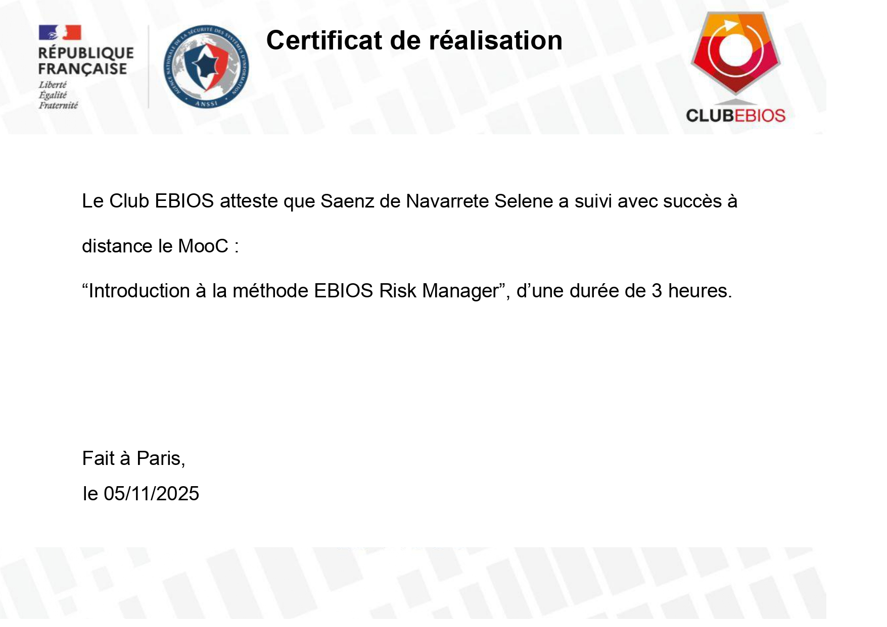
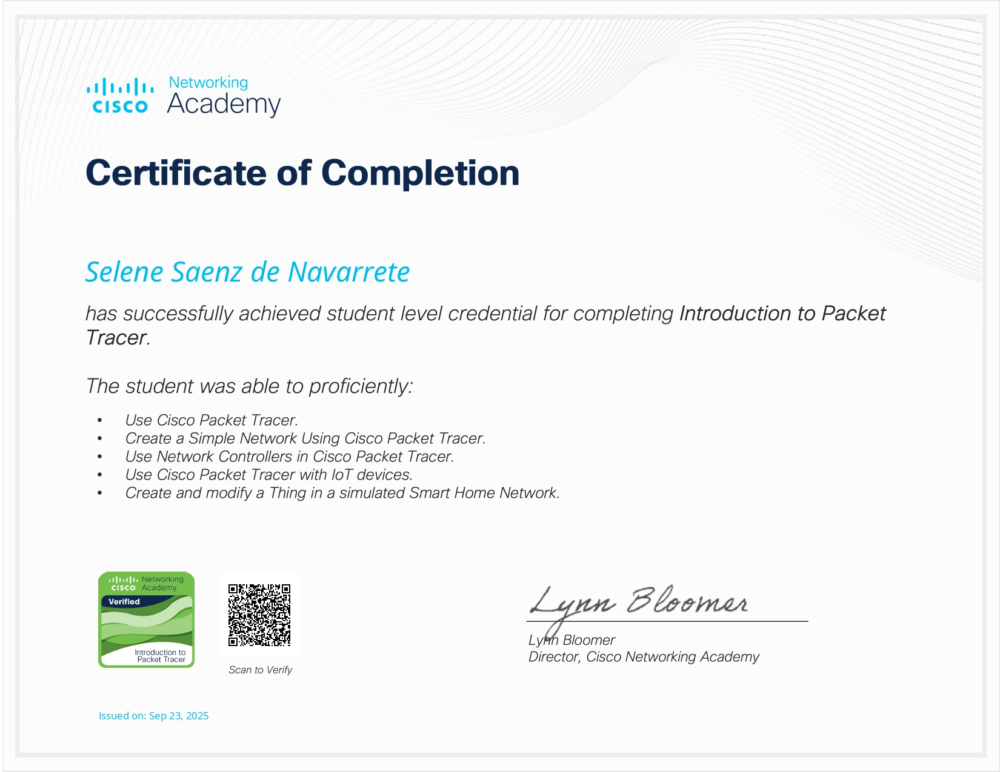

Formation
BTS SIO option SISR, spécialisée en administration système, infrastructure, et virtualisation.
Étudiante en BTS SIO option SISR, je me spécialise dans l'administration système, la gestion de réseaux Cisco et la virtualisation d'infrastructures (VirtualBox, Proxmox). Curieuse des technologies émergentes (GPU virtuel, render farm, automatisation Ansible), je recherche une alternance ou un stage pour mettre en pratique ces compétences au sein d'une équipe infrastructure/réseaux.
Étudiante passionnée par l'administration système, l'UX/UI et les nouvelles technologies de Render 3D.
BTS SIO option SISR, spécialisée en administration système, infrastructure, et virtualisation.
Contribuer au renforcement des infrastructures informatiques et mettre en place des OS spécifiques aux métiers de la 3D.
Passionnée par les technologies 3D de pointe et artisanat méticuleux (NPR Animation), l'UX/UI design et les solutions de virtualisation avancées.
Technologies maîtrisées en administration système, infrastructure et virtualisation — et compétences actuellement en cours d'acquisition.
Configuration et sécurisation de réseaux d'entreprise.
Déploiement et gestion de machines virtuelles.
Mise en place d'architectures réseau virtualisées.
Administration système multiplateforme.
Maintenance et dépannage matériel/logiciel.
Veille et exploration de nouvelles technologies.
Simulation et supervision d'infrastructures réseau.
Mise en place et gestion de bases de données.
Technologies et domaines que j'explore actuellement, en lien avec ma veille sur la 3D et les infrastructures émergentes. Plus la lune est pleine, plus la compétence est avancée.
Virtualisation de GPU (NVIDIA vGPU, Proxmox passthrough) pour les charges de rendu 3D et NPR en environnement virtualisé.
Architecture réseau et stockage (NAS/SAN) pour fermes de rendu : files d'attente, débits, tolérance aux pannes.
Appliquée à des serveurs Debian/Ubuntu : pare-feu nftables, SELinux/AppArmor, audit et bonnes pratiques ANSSI.
Déploiement reproductible de configurations (playbooks) pour mes labs Proxmox et serveurs Linux.
Mise en place de Zabbix / Grafana / Prometheus pour surveiller des infrastructures virtualisées.
Principes Zero Trust, segmentation micro-réseau et authentification forte appliqués à des labs pfSense.
Projets techniques et réalisations innovantes
Configuration et gestion d'un cloud personnel pour héberger des applications et des données de manière sécurisée et évolutive.
Configuration et installation d'un NAS pour le centre audiovisuel du lycée Turgot.
Guide complet d'installation et de configuration d'OCS Inventory NG sur Debian 12. Couvre l'installation de MariaDB, Apache2, PHP 8.2, la résolution des dépendances Composer et le dépannage de l'infrastructure.
Certifications obtenues et en cours de préparation




Vue d'ensemble de mes compétences, projets associés et niveau de pratique.

Formation spécialisée en administration systèmes, réseaux et cybersécurité. Acquisition de compétences en virtualisation, sécurisation d'infrastructures et cyber-défense. Projets : Infrastructure sécurisée, Lab pentesting, Solution monitoring, Cloud hybride, Audit sécurité.
Formation générale incluant la découverte de plusieurs langages (Arduino, HTML/CSS/JS, Bootstrap, ARjs) ainsi que les pratiques courantes du Webdesign en passant par la création de logo et d'identité visuelle.
Formation de droit et commerce international incluant du droit, de l'économie et du mandarin.
Les technologies émergentes dans l'animation 3D, 2D, les VFX et SFX, vues depuis l'infrastructure qui les fait tourner.
Je suis l'arrivée de nouveaux outils dans la production d'images animées : IA générative, rendu temps réel, GPU virtualisés, fermes de rendu dans le cloud, standards ouverts. Mon angle est celui d'une future admin systèmes et réseaux : derrière chaque film, il y a des serveurs, du stockage, du réseau et de la sécurité. La veille se lit en trois temps : la synthèse (ma réponse à la question), la méthode (comment je fais ma veille) et la chronologie (les événements sourcés, filtrables par thème).
Ma réponse, argumentée et datée.
Les technologies émergentes rendent-elles la création en animation et en VFX plus accessible, sans fragiliser les studios et leurs infrastructures ?
Oui pour la création, mais à condition d'avoir une infrastructure solide. Les outils (Blender, Unreal, IA) sont de plus en plus accessibles. En revanche, la charge se reporte sur les GPU, le stockage, le réseau et la sécurité. Un studio qui adopte ces technologies a besoin de profils capables de virtualiser des GPU, d'automatiser une ferme de rendu, de la superviser et de la protéger. C'est exactement la place d'une technicienne SISR.
Vitesse annoncée par Netflix pour la scène VFX générée par IA dans El Eternauta. juillet 2025
Budget d'environ 3,6 millions de dollars pour Flow, Oscar 2025, fait avec un logiciel gratuit. 3 mars 2025
Salariés estimés chez Technicolor dans le monde au moment de sa fermeture. 25 févr. 2025
Le support officiel NVIDIA vGPU sur Proxmox VE rend possible un lab de rendu virtualisé proche de ce qu'utilisent les studios.
AWS Deadline Cloud, OpenUSD et Blender 5 montrent qu'un pipeline se construit autour du stockage, des files de rendu et des formats ouverts.
Déployer à l'identique des dizaines de nœuds de rendu (pilotes GPU, Blender, agents) est un cas d'usage direct des playbooks.
Surveiller la charge et la température des GPU, l'espace disque et les files de rendu avec Zabbix / Grafana / Prometheus.
Les serveurs de rendu et de stockage hébergent la propriété intellectuelle du studio : ils doivent être durcis en priorité.
Les attaques sur SharePoint ou chez Ankama montrent l'intérêt de segmenter le réseau et de contrôler chaque accès aux assets.
Comme un graphe de nœuds : chaque étape alimente la suivante.
Les technologies émergentes rendent-elles la création en animation et en VFX plus accessible, sans fragiliser les studios et leurs infrastructures ?
Face éclairée (Oui) : ce qui baisse les coûts et accélère la production. Face cachée (Mais) : ce que ça demande en infrastructure, en sécurité et en cadre légal.
Risque : surestimer l'IA générative parce qu'elle occupe toute l'actualité.
Parade : garder dans la chronologie des sujets moins médiatisés (formats ouverts, vGPU, sécurité) et chercher des cas d'usage réellement en production.
Risque : reprendre les chiffres d'un communiqué de presse comme s'ils étaient neutres.
Parade : préciser qui annonce le chiffre et le recouper avec la presse spécialisée (CG Channel, 3DVF, 80.lv).
Je combine des sources automatiques (alertes et flux) et des sources humaines (créateurs, communautés), pour ne pas dépendre d'un seul canal.
Glissez la piste ou utilisez les flèches. Filtrez par calque.
Ferme de rendu gérée dans le cloud et facturée à l'usage : un studio peut ajouter des centaines de nœuds pour un pic de production sans acheter de serveurs.
L'outil d'animation 2D de Blender est réécrit et peut être piloté par les Geometry Nodes : le dessin 2D se mélange plus facilement à la 3D.
La Blender Foundation publie une version expérimentale dédiée au rendu stylisé (anime, cartoon), développée avec le studio derrière Goo Engine.
Le moteur de rendu de Chaos intègre des scènes capturées en Gaussian splatting dans Maya et Houdini, une nouvelle façon de numériser des décors réels.
Faute d'investisseurs, le groupe propriétaire de grands studios VFX et d'animation arrête ses activités ; environ 4 500 postes concernés dans le monde.
Le film letton de Gints Zilbalodis, rendu avec EEVEE, remporte l'Oscar du meilleur film d'animation : une première pour un film fait avec un logiciel libre.
À partir de vGPU 18, Proxmox VE devient un hyperviseur officiellement supporté : on peut partager un GPU entre plusieurs VM de rendu ou de postes graphiques.
Premier grand procès d'Hollywood contre une IA générative d'images, accusée de reproduire des personnages protégés sans licence.
Une scène d'effondrement d'immeuble est produite avec de l'IA générative, dix fois plus vite qu'avec un pipeline VFX classique selon Netflix.
MegaLights et le feuillage Nanite rendent possibles des scènes très lourdes en temps réel, de plus en plus utilisées pour la prévisualisation et l'animation.
Espace de travail ACEScg, sortie HDR et volumes dans les Geometry Nodes : Blender s'aligne sur les standards couleur des studios VFX.
Disney investit 1 milliard de dollars dans OpenAI et autorise plus de 200 personnages (Disney, Pixar, Marvel, Star Wars) dans Sora, sans les voix ni l'image des acteurs.
L'Alliance for OpenUSD publie la première spécification officielle du format ; la version 1.1, qui ajoute l'animation, est prévue pour 2026.
Nouveau nœud Raycast pour EEVEE, compilation des shaders 25 à 50 % plus rapide et plus de 350 bugs corrigés.
Le studio français (Dofus, Wakfu) annonce une fuite de données clients et prévient la CNIL : la sécurité concerne aussi les studios d'animation.
Maya MotionMaker peut être entraîné sur ses propres données d'animation, 3ds Max édite les Gaussian splats et Arnold arrive en rendu interactif dans le viewport.
Le cofondateur de DreamWorks Animation annonce un nouveau studio pour produire films et séries d'animation avec l'IA générative.
Des failles et des permissions mal réglées permettent de couper les antivirus puis de chiffrer les données ; les studios qui y stockent leurs assets risquent un arrêt de production.
Un agent créatif orchestre les outils Adobe et des modèles tiers, et Firefly Graph enchaîne outils et modèles dans des workflows réutilisables.
Aucun événement pour ce calque.